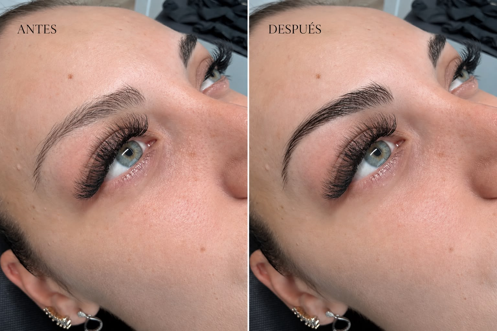
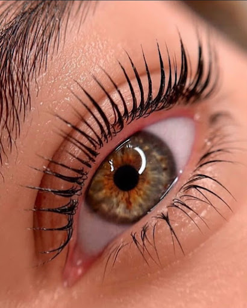
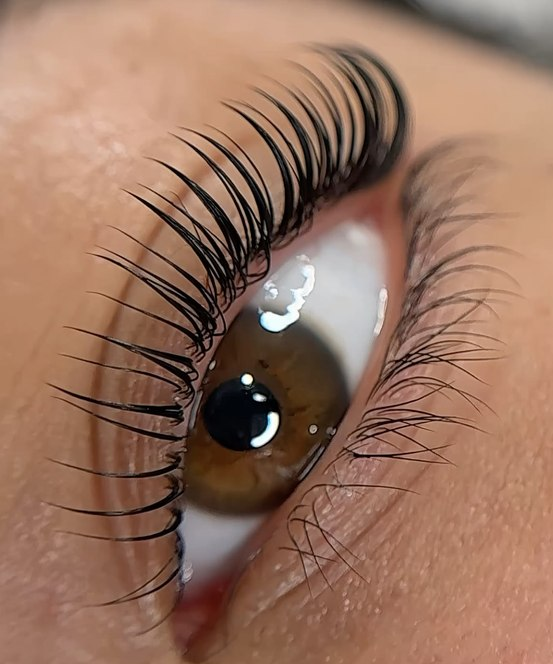

Protocolo de mirada · Granollers
Nohuska Korean Gaze™
Korean Gaze™ es el protocolo propio de Nohuska Beauty Lab que combina Natural Brow™ —diseño, laminado y tinte de cejas— y lifting coreano con tinte vegano de pestañas. Trabajamos ambas zonas en una misma cita, después de valorar el pelo natural y el acabado que buscas.
85 € · cita de aproximadamente 90 minutos. Valoración gratuita de cejas y pestañas antes de confirmar el pack.


Un protocolo, tres decisiones personalizadas
Cejas definidas y pestañas elevadas sin perder naturalidad.
Korean Gaze no aplica la misma combinación a todas las miradas. Primero observamos la forma de las cejas, la dirección del pelo, la longitud de las pestañas y el efecto que quieres conseguir. Después ajustamos cada fase para que cejas y pestañas se vean equilibradas entre sí.
El protocolo trabaja el pelo natural y es temporal. No incluye extensiones ni micropigmentación. Si detectamos que otra técnica puede encajar mejor, te lo explicamos antes de reservar.
Qué incluye Nohuska Korean Gaze™ en Granollers
Pack Korean Gaze™
El pack combina lifting coreano y Natural Brow por 85 €, en una cita de aproximadamente 1 hora y 30 minutos. Por separado, ambos servicios suman 110 €. Consulta disponibilidad y confirma que el protocolo encaja con tus cejas y pestañas.
Consultar disponibilidadResultados reales · Nohuska
Una mirada diseñada como conjunto.

Las fotografías muestran trabajos propios y autorizados de los dos componentes del protocolo. No documentan una secuencia antes y después de una misma sesión de Korean Gaze. El resultado depende del pelo natural, el estado inicial y la respuesta de cada persona.
Valoración previa
¿Puede encajar con tu mirada?
Puede ser una buena opción si deseas ordenar y definir tus cejas, elevar tus pestañas naturales y ganar intensidad sin añadir extensiones. Antes del servicio revisamos el estado del pelo y cualquier antecedente o sensibilidad que nos comuniques.
Te atendemos con cita previa en Avinguda Sant Esteve, 40, 08402 Granollers. Consulta disponibilidad antes de desplazarte.
Elige con información clara
- Trabaja tus cejas y pestañas naturales.
- No incluye extensiones ni micropigmentación.
- La combinación se adapta a cada caso.
- Productos veganos y cruelty free.
Preguntas sobre Korean Gaze
¿Cuánto dura Korean Gaze?
La cita dura aproximadamente 1 hora y 30 minutos. Incluye Natural Brow y lifting coreano con tinte, tras valorar ambas zonas.
¿Qué incluye el protocolo?
Incluye la valoración de la mirada y, cuando el pelo lo permite, Natural Brow (diseño, laminado y tinte de cejas) y lifting coreano con tinte vegano de pestañas.
¿Es micropigmentación?
No. Korean Gaze trabaja el pelo natural de cejas y pestañas con técnicas temporales. La micropigmentación se valora como un servicio diferente.
¿Dónde se realiza?
En Nohuska Beauty Lab, Avinguda Sant Esteve, 40, 08402 Granollers, con cita previa.
¿Es vegano y cruelty free?
El protocolo se plantea con productos veganos y cruelty free. Antes del servicio revisamos también el estado del pelo y las posibles sensibilidades que nos comuniques.
Conoce cada parte del protocolo
Una consulta por WhatsApp no confirma una reserva. Acordaremos contigo el tratamiento, la fecha y la hora.
Diseña tu mirada completa.
Valoración personalizada y cita previa en Granollers.